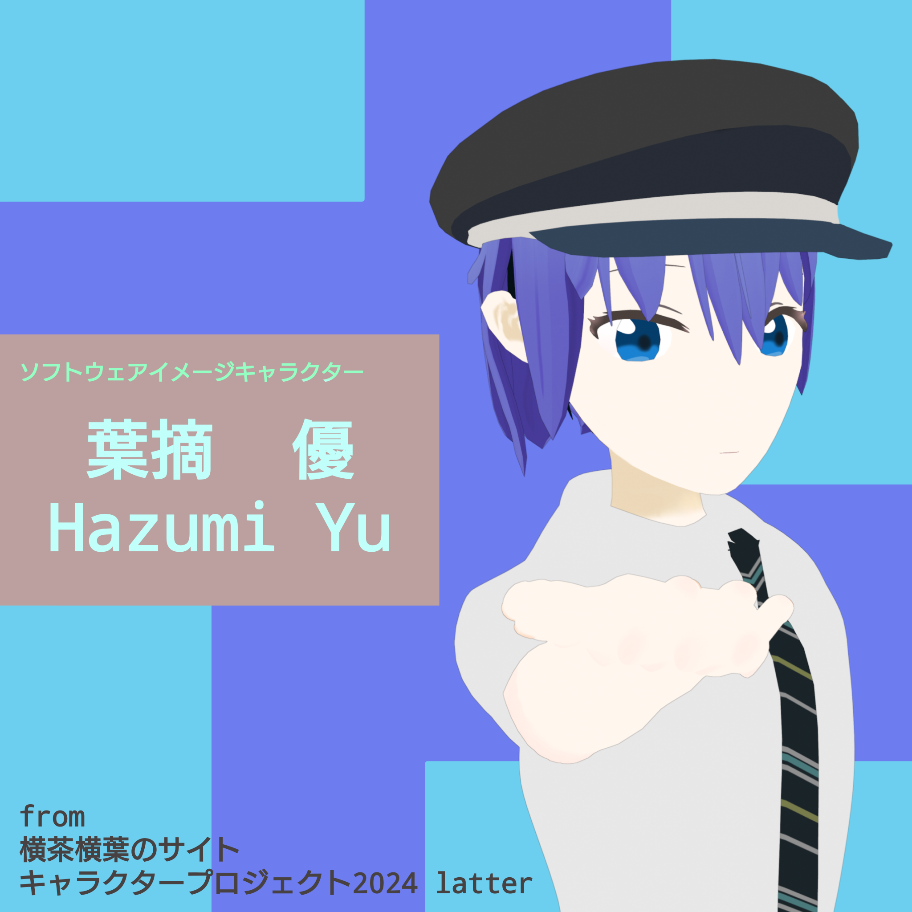
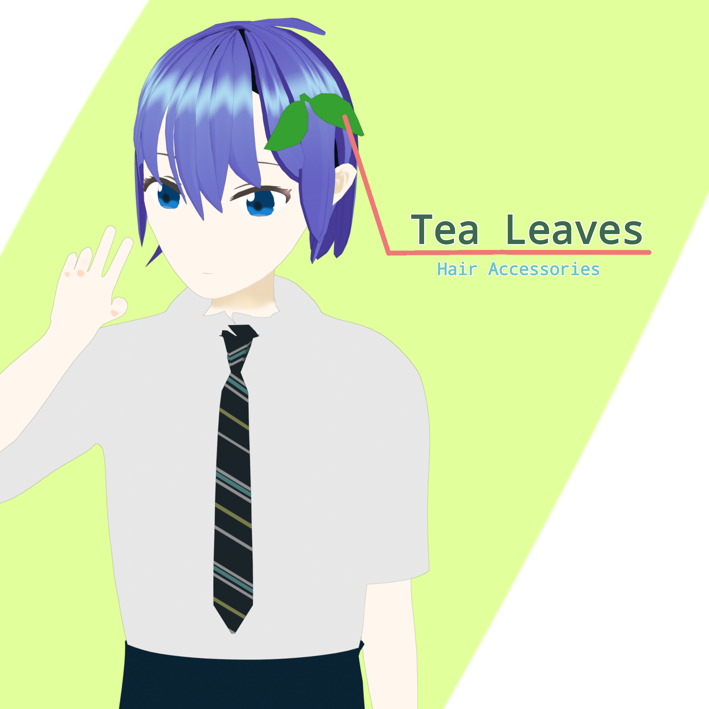

葉摘優とは?
横茶横葉のサイトにて2024年に行ったキャラクター制作プロジェクトにて"ソフトウェア系キャラクター"として公表したキャラクターです。

常に頭に茶葉がモチーフの髪飾りを着用している点が注目ポイントです。
名前:葉摘優(はづみゆう)
年齢:設定なし
誕生日:1月1日(設定なし)
身長:170cm(年によって上下変動)
趣味:こだわりのコーヒー淹れ
好きなもの:コーヒー,麦茶
嫌いなもの:紅茶,緑茶(麦茶は好き)
DirConvというソフトウェア紹介時の挿絵キャラクターとして過去1度だけ登場しました。
Question
1. 今後もキャラクタープロジェクトは続けるの?
今のところ予定はありません。(飽きてしまいました。)
2. なんで 葉摘 なの?
管理人の名前に 葉 が含まれるので、そうしました! 他のキャラクターの頭文字を合わせると横茶横葉になったりならなかったり...。
3. このキャラ、私使いたい! 二次創作してもいい?
はい、どうぞご自由にお使いくださいませ! ただし、常識の範囲内で、お願いいたします。
4. 今更なぜキャラクター紹介ページを作ったの?
キャラクター制作はもうやらないと思い、せめて紹介ページくらいは作っておこうと考えたからです。いわゆるファイナライズです!